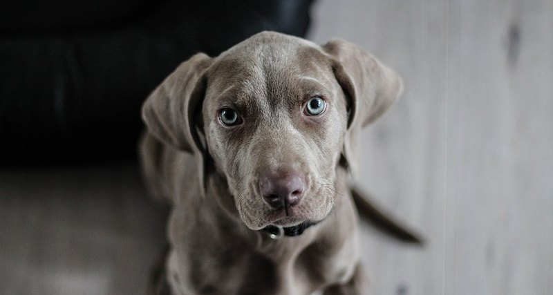
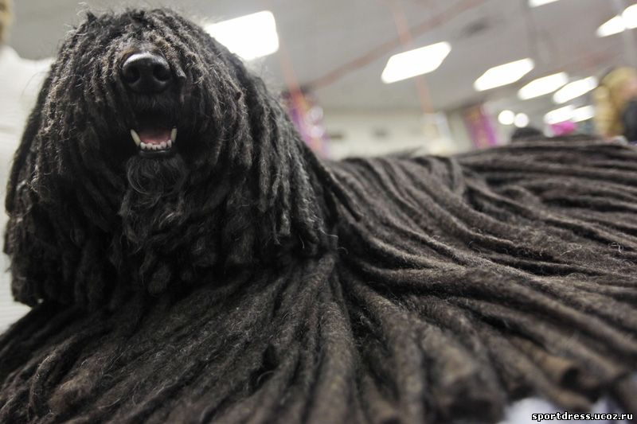
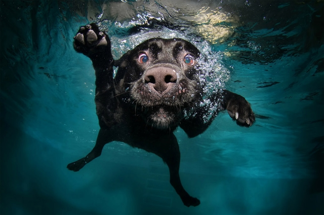
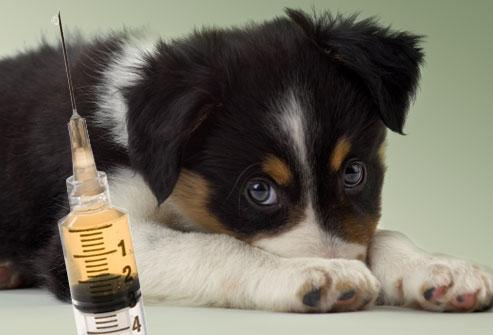

ПОРОДЫ |
УХОД |
КОРМЛЕНИЕ |
ДРЕССИРОВКА |
ЗАБОЛЕВАНИЯ |
О НАС |

Собаки признаны любимыми и востребованными домашними питомцами. Люди заводят псов для охоты, защиты или просто для удовольствия. Колоссальное многообразие пород помогает каждому человеку и семье подобрать оптимальную породу, опираясь на характеристики и темперамент. Когда собачка переступила порог дома, новоиспеченные хозяева начинают интересоваться уходом за собакой. |

Ухаживать за шерстью собаки полагается с малого возраста. Щенки не склонны к повышенной линьке, но обнаруживают чувствительную и пока тонкую кожу. По последней причине не рекомендуется интенсивно вычесывать щенков, опасаясь повредить кожный покров либо вызвать раздражение. Даже взрослые собаки имеют тонкую и нежную кожу. Свойство зависит от характеристик породы. К примеру, чихуахуа вообще не требует регулярных расчесываний, тем более, стрижки. Ухаживать за собакой чихуахуа несложно, трудности скрывает питание, требующее строгости и корректировок. Полагают, размер собаки прямо пропорционален хлопотам, связанным с содержанием и уходом. Рациональное зерно в утверждении найдётся. К примеру, кавказская овчарка требует ежедневного ухода за длинной шерстью и подшерстком. Уход за массивным питомцем станет трудным, если хозяин не располагает должным количеством свободного времени. Некоторым доводилось видеть, как собаки ухаживают за щенками. Зрелище чудесное и доброе. Мамы тщательно вылизывают деток, наводят чистоту. Уход заключается и в регулярном кормлении. В момент, когда несколько щенков без устали сосут грудь мамы, заметно счастливое выражение мордочки собаки. Когда малыш попадает в семью, ему хочется чувствовать не меньшую ласку, заботу и любовь. К счастью, люди осознают это и стараются подарить максимум любви питомцу. Положено ухаживать за собакой с первых дней пребывания в новой обстановке. Уход и ласка позволят животному быстрее освоиться и расслабиться в незнакомой обстановке. |

Часто собаки безумно любят купаться. Водным процедурам стоит уделить особенное внимание. Случается, собаководы убеждены, что собаку требуется регулярно мыть. Особенно сказанное относится к владельцам маленьких, комнатных собачек. Налицо распространенное заблуждение, не имеющее под собой основы. Часто мыть собак нельзя. Вне зависимости от размеров и породы. Частое мытье отрицательно влияет на шерсть и кожу животного. Отметим важные моменты относительно купания собаки:
|
Ухаживать за большой собакой накладно в плане времени. Большие породы собак обнаруживают отличную мускулатуру и мощный скелет. Колоссальный физический потенциал вызывает желание и нужду в длительных прогулках. Конкуренцию составят маленькие собачки, которых допустимо выводить лишь на 5-7 мин. Выгул крупных собак советуется осуществлять на малолюдной либо безлюдной территории. Чтобы любимец рос воспитанным и сильным, потребуется уделять внимание его физической подготовке. Рекомендуется водить питомца на специальные площадки для тренировки собак. Лучше посещать места выгула рано утром либо вечером, на закате. Это объясняется меньшим количеством людей и собак, далеко не все животные адекватно реагируют друг на друга. Перед первым походом на территорию тренировочного комплекса рекомендуется провести с собакой воспитательную беседу. Нужно пройтись по улице и посмотреть, как животное реагирует на проходящих мимо собак. При проявлении малейшей агрессии тренировку вместе с прочими животными придётся отменить.Перед полноценным «выходом в свет» собака обязана знать как минимум простейшие команды, неукоснительно слушаться хозяина. Иерархия остаётся обозначена в уме питомца, иначе длительная тренировочная прогулка станет потрясением для обоих: хозяина и животного. Ухаживать за маленькой собакой в плане выгула гораздо проще. Малыши не требуют длительных прогулок. К примеру, породы пекинес и ши-тцу сами рвутся домой после выполнения уличных дел. Объяснение простое. Летом пёсикам жарко, они испытывают жажду, поэтому спешат домой. Зимой – лапкам холодно. Длительные прогулки возможны лишь весной и осенью, при отсутствии шквального ветра. |

Пристальное влияние уделяют прививкам. Каждое животное вовремя прививается. Не рекомендуется пренебрегать, риск заражения крайне велик. Особенно предостережение относится к маленьким и чрезвычайно любопытным собакам, стремящимся все попробовать на улице и дома. Питомцы способны заразиться от любой проходящей мимо собаки либо испражнений. Делать прививки показано в 2-3 мес. Современные ветеринарные станции предлагают комплексную прививку, вместо привычных трех. В ней есть определенные преимущества, но для организма животного бывает тяжело перенести результат. Маленькие собачки могут даже слечь на пару дней, переживая слабость и недомогание. Питомец заслуживает должного внимания и ухода. Не стоит обращаться с собакой как с игрушкой, живое существо способно полюбить семью сердцем и душой и самоотверженно встать на защиту, если потребуется. |